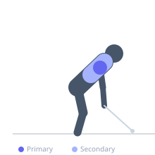

Exercise guide / Face Pull with External Rotation
Face Pull with External Rotation
The face pull with external rotation is an enhanced variation of the standard face pull that adds an external rotation of the shoulder at the end of the pulling motion. By pulling the rope to the face level and then rotating the forearms upward and back, it simultaneously trains the posterior deltoid, rotator cuff external rotators, and middle trapezius, making it one of the most comprehensive exercises for shoulder health and long-term pressing longevity.
Primary muscles
deltoid posterior
infraspinatus
teres minor
Secondary muscles
trapezius middle
rhomboid major
Stabilizers
trapezius lower
supraspinatus
Equipment
Cable Machine (High Pulley)
Optional
Cable Machine (Dual Pulley / Functional Trainer)


Starting position
- Attach a rope to a high-pulley cable machine at face height. Grip the rope with both hands, palms facing each other. Stand back enough to create tension with arms extended toward the cable.
Setup
- Set the cable pulley to approximately eye or forehead level. Attach a rope attachment. Use a light to moderate weight — form matters more than load here.
Steps
- Step 1: Grip the rope with both hands. Step back so the cable is under tension. Elbows slightly bent at the start.
- Step 2: Pull the rope toward the face by driving the elbows out and back, aiming to pull the hands to either side of the face.
- Step 3: At the end of the pull, externally rotate the shoulders by pulling the forearms and hands upward and back — the forearms should now point toward the ceiling.
- Step 4: Pause at the top, squeezing the rear delts and infraspinatus, then return slowly to the start.
Coaching cues
- Pull to your ears, not your chin
- Finish with forearms pointing to the ceiling — that is the external rotation you want
Breathing
- Exhale as you pull and rotate; inhale on the return.
Range of motion
- Pull until the hands reach the sides of the face; then rotate forearms fully upward.
Tempo
- 2-2-2-0 (hold with external rotation for 2 seconds)
Common mistakes
- Skipping the external rotation component at the end of the pull
- Using too heavy a weight, which causes the torso to rock backward
Safety
- Keep the cable at face height — not overhead — to protect the shoulder
- Light weight is recommended; heavy loads undermine the form
Training
- endurance: 12–20 reps
- endurance: 3–4 sets
- Rest: {'endurance': 45}